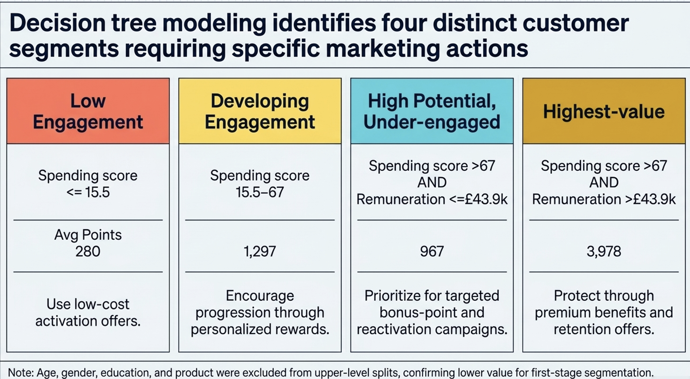
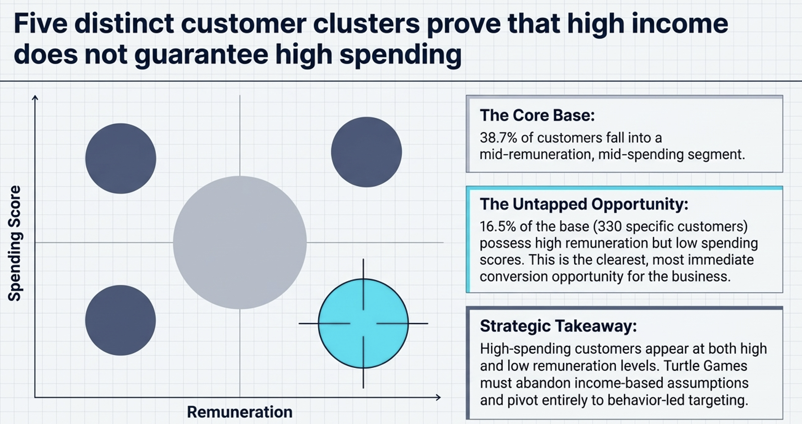

Using customer behaviour, predictive modelling, segmentation and review data to identify who Turtle Games should retain, activate and target — and how its loyalty programme could become more effective.
Turtle Games wanted to improve sales performance by understanding which customers were most engaged, which had unrealised potential and where marketing investment should be focused.
Customer income alone does not guarantee engagement. Customers with similar financial profiles can accumulate very different loyalty balances, suggesting that purchasing behaviour and programme participation need to be considered together.
The analysis therefore combined structured customer data with unstructured customer reviews to move from broad relationships to actionable customer segments and marketing recommendations.
Who should Turtle Games retain, who should it activate, and which customer characteristics are actually useful for marketing?
Tested individual relationships between loyalty points and spending, remuneration and age.
Converted customer relationships into interpretable predictive thresholds and CRM rules.
Identified behavioural customer profiles using remuneration and spending score without loyalty points as the target.
Analysed reviews and summaries to identify recurring positive and negative product themes.
Investigated distributions, outliers and priority groups using statistical summaries and visual analysis.
Evaluated whether loyalty points could be predicted reliably using spending score, remuneration and age.
Across Python regression and R exploratory analysis, spending score was the strongest individual predictor of loyalty points.
R² of 45.2%. Approximately +33.1 loyalty points for each one-point increase in spending score.
Meaningful but weaker than spending behaviour. Approximately +34.2 loyalty points per additional £1,000 of remuneration.
Negligible standalone linear explanatory value, making age a poor first-stage targeting variable.
The customer base also showed a right-skewed loyalty distribution: most customers held moderate balances while a smaller group accumulated exceptionally high points.

Pruned decision tree translating customer behaviour into interpretable loyalty segments and CRM thresholds.
Low-cost automated activation is more appropriate than expensive retention activity.
Core customers with moderate average loyalty-point accumulation.
Strong spending behaviour is not converting into comparable loyalty engagement.
Customers combining strong spending behaviour and remuneration produced the highest average loyalty balances.
The Elbow curve flattened after k = 5 and the Silhouette score reached its maximum of 0.582 at five clusters, giving the best balance of separation, interpretability and business usability.

K-means segmentation identified five distinct customer profiles based on remuneration and spending behaviour, with k = 5 producing the strongest silhouette score of 0.582.
774 customers · approximately £45k remuneration · spending score around 50.
356 customers · approximately £74k remuneration · spending score around 82.
330 customers · approximately £75k remuneration · spending score around 18. Clearest activation opportunity.
271 customers · approximately £20k remuneration · spending score around 20.
269 customers · approximately £20k remuneration · spending score around 79.
The high-remuneration, low-spending segment represents 16.5% of the entire customer base and the clearest opportunity for targeted activation.
Rather than assuming these customers are simply low-value, Turtle Games should investigate whether low engagement reflects weak programme awareness, infrequent purchasing, irrelevant rewards, poor redemption value or limited category relevance.
30-day double points · second-purchase voucher · three-purchase bonus · category-specific offers.
These themes can strengthen campaign messaging, positioning and product descriptions.
These point to operational improvements in instructions, packaging, usability and quality assurance.
Strong overall explanatory power, with residual error of 513.8.
Better fit, residual error reduced to 489.4 and AIC approximately 191 points lower than the initial specification.
Use tiered benefits, early access, members-only products, personalised rewards and relevant redemption options for high-spending, high-remuneration customers.
Prioritise the 330 high-remuneration, low-spending customers using time-limited offers such as double points, second-purchase vouchers and three-purchase bonuses.
Investigate programme awareness, reward relevance, purchase frequency and redemption barriers among customers who spend strongly but accumulate comparatively few loyalty points.
Customers with spending scores of 15.5 or below should receive automated category offers, spend-and-earn challenges, bonus points or first-redemption incentives.
Shift marketing investment toward purchase frequency, recency, basket value, product preferences, programme participation and redemption behaviour.
Address recurring issues around instructions, assembly, missing components, packaging, product quality and value for money.
Add tenure, campaign response, recency, purchase frequency, basket value, reward redemption and product-level data to improve future customer models.
The analysis identified a specific 330-customer conversion opportunity rather than recommending broad marketing across the full customer base.
Decision-tree thresholds converted predictive analysis into operational CRM rules, while clustering showed that income alone does not determine customer engagement.
The project also demonstrated model governance: predictive outputs were used where they were reliable and explicitly limited where they were not.